目录
在强化学习中，利用（exploitation）与探索（exploration）是一个关键课题。本文介绍了深度强化学习（Deep RL）中几种常见的提升探索效果的方法。
[2020-06-17 更新：在“前向动力学”一节中增加了“通过不一致性进行探索”的内容。]
是强化学习中的核心话题。我们希望强化学习代理能够尽快找到最佳解决方案。然而，如果过早地只利用已有方案而缺乏足够探索，也会产生严重问题，可能导致陷入局部最优甚至完全失败。现代（RL）在优化回报方面已经能高效实现利用，而探索仍是一个开放性课题。多臂老虎机问题及其解决方案强化学习漫谈策略梯度算法
本文将讨论深度强化学习中几种常见的探索策略。由于这是一个非常大的领域，文章不可能涵盖所有重要子主题。我计划定期更新，逐步丰富和完善内容。
经典探索策略#
作为快速回顾，我们先介绍几种在多臂老虎机问题或简单表格型强化学习中表现良好的经典探索算法。
当使用神经网络作为函数逼近器时，以下策略可用于提升深度强化学习训练中的探索效果：
关键探索问题#
当环境很少提供奖励反馈，或存在大量干扰噪声时，良好的探索会变得特别困难。许多探索策略被提出用于解决以下一个或两个问题。
困难探索问题#
“困难探索”问题指的是在奖励极其稀疏甚至具有欺骗性的环境中进行探索。这种情况非常困难，因为随机探索几乎无法发现成功状态或获得有意义的反馈。
蒙特祖玛的复仇（Montezuma’s Revenge）是困难探索问题的一个典型例子。它仍是Atari游戏中少数几个深度强化学习难以解决的挑战性游戏。许多论文都用它来验证算法效果。
噪声电视问题#
“噪声电视”问题最初源于Burda等人（2018）的一个思想实验。想象一个强化学习代理通过寻找新奇体验来获得奖励，那么一台无法控制且输出不可预测随机噪声的电视就能永远吸引它的注意力。代理会持续从噪声电视中获得新奖励，但无法取得任何有意义的进展，最终变成“沙发土豆”。
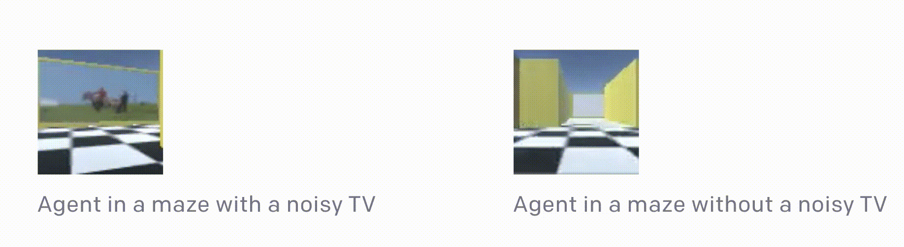
将内在奖励作为探索加成#
改善探索（尤其是解决困难探索问题）的一种常用方法，是在环境奖励之外附加一个额外的奖励信号，以鼓励更多探索。因此，策略会基于由两部分组成的奖励进行训练：r_t = r^e_t + \beta r^i_t，其中\beta是一个超参数，用于调节利用与探索之间的平衡。
这种内在奖励的思路一定程度上受到心理学中内在动机（Oudeyer & Kaplan, 2008）的启发。由好奇心驱动的探索可能是儿童成长和学习的重要方式。换句话说，在人类心智中，探索行为本身就应具有内在奖励，以鼓励这种行为。内在奖励可能与好奇心、惊讶程度、对状态的熟悉度以及许多其他因素相关。
相同的思路也可以应用于强化学习算法。接下来的章节中，基于奖励加成的探索方法大致分为两类：
基于计数的探索#
如果我们把内在奖励看作是对让我们感到惊讶的情境的奖励，那么就需要一种方法来衡量某个状态是否新奇或出现频率高。一个直观的方法是统计一个状态被访问的次数，并据此分配奖励。这种奖励会引导代理更倾向于访问很少去过的状态，而不是常见状态。这就是所谓的基于计数的探索方法。
令N_n(s)为经验计数函数，记录状态s在序列s_{1:n}中实际被访问的次数。不幸的是，直接使用N_n(s)进行探索并不现实，因为大多数状态的计数都会是N_n(s)=0，尤其当状态空间是连续或高维的时候。我们需要为大多数状态赋予一个非零的计数，即使它们之前从未被见过。
通过密度模型计数#
Bellemare等人（2016）使用密度模型来近似状态访问频率，并提出了一种从密度模型中推导出伪计数的创新算法。首先定义状态空间上的条件概率，\rho_n(s) = \rho(s \vert s_{1:n})表示在已观测前n个状态为s_{1:n}的条件下，第(n+1)个状态为s的概率。经验上可以用N_n(s)/n来衡量。
再定义一个状态s的重编码概率，即在观察到新的s后，密度模型对s分配的概率，记为\rho’_n(s) = \rho(s \vert s_{1:n}s)。
论文引入了两个概念来更好地规范密度模型：伪计数函数\hat{N}_n(s)和伪计数总量\hat{n}。由于它们旨在模仿经验计数函数，因此有：
\rho_n(x)与\rho’_n(x)之间的关系要求密度模型是“学习正向”的：对所有s_{1:n} \in \mathcal{S}^n和所有s \in \mathcal{S}，都有\rho_n(s) \leq \rho’_n(s)。换句话说，在观察到一个实例s后，密度模型对同一s的预测概率应该增加。除此之外，密度模型必须完全在线训练，使用非随机化的经验状态小批量，因此自然有\rho’_n = \rho_{n+1}。
伪计数可以通过求解上述线性方程组，从\rho_n(s)和\rho’_n(s)中计算得到：
或者通过预测增益（PG）来估计：
一种常见的基于计数的内在奖励是r^i_t = N(s_t, a_t)^{-1/2}（如MBIE-EB中；Strehl & Littman, 2008）。伪计数形式的探索奖励形状类似：r^i_t = \big(\hat{N}_n(s_t, a_t) + 0.01 \big)^{-1/2}。
Bellemare等人（2016）的实验采用了一种简单的CTS（上下文树切换）密度模型来估计伪计数。CTS模型以2D图像为输入，根据位置相关的L型滤波器乘积为其分配概率，每个滤波器的预测由在过去图像上训练的CTS算法给出。CTS模型简单，但在表达能力、可扩展性和数据效率上存在局限。在后续论文中，Georg Ostrovski等人（2017）通过训练PixelCNN（van den Oord等人，2016）作为密度模型改进了该方法。
密度模型也可以是高斯混合模型，如Zhao & Tresp（2018）中所做。他们使用变分高斯混合模型估计轨迹（例如连续状态序列）的密度，并用预测概率在离策略设定中指导经验回放的优先级排序。
哈希后计数#
另一种使高维状态可计数的方法是将状态映射为哈希码，从而让状态出现次数变得可跟踪（Tang等人，2017）。状态空间通过哈希函数\phi: \mathcal{S} \mapsto \mathbb{Z}^k被离散化。在奖励函数中加入探索奖励r^{i}: \mathcal{S} \mapsto \mathbb{R}，定义为r^{i}(s) = {N(\phi(s))}^{-1/2}，其中N(\phi(s))是状态\phi(s)出现的经验计数。
Tang等人（2017）提出使用局部敏感哈希（LSH）将连续高维数据转换为离散哈希码。LSH是一类基于特定相似度度量查询最近邻的流行哈希函数。如果一个哈希方案x \mapsto h(x)是局部敏感的，它就会保留数据点之间的距离信息，使得相近的向量得到相似的哈希，而相距较远的向量哈希差异很大。（如果感兴趣，可参考LSH在中的应用。）SimHash是一种计算高效的LSH，它通过角度距离衡量相似性：Transformer 家族
其中A \in \mathbb{R}^{k \times D}是一个每个元素都从标准高斯分布独立同分布采样的矩阵，g: \mathcal{S} \mapsto \mathbb{R}^D是一个可选的预处理函数。二进制码的维度是k，控制着状态空间离散化的粒度。更高的k意味着更高的粒度和更少的哈希冲突。
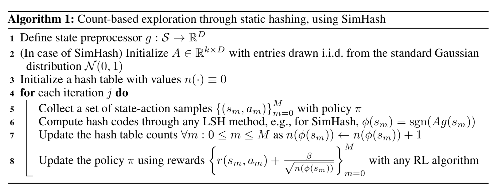
对于高维图像，SimHash在原始像素级别可能效果不佳。Tang等人（2017）设计了一个自编码器（AE），输入状态s来学习哈希码。它在中间有一个由k个sigmoid函数组成的特殊全连接层作为隐状态，然后将该层的sigmoid激活值b(s)四舍五入到最近的二进制数\lfloor b(s)\rceil \in \{0, 1\}^D，作为状态s的二进制哈希码。对n个状态的自编码器损失包含两项：
这种方法的一个问题是，不相似的输入s_i, s_j可能被映射到相同的哈希码，但自编码器仍能完美重建它们。可以想象将瓶颈层b(s)替换为哈希码\lfloor b(s)\rceil，但这样梯度就无法通过取整函数反向传播。注入均匀噪声可以缓解这个问题，因为自编码器必须学会将隐变量推得更远以抵消噪声影响。
基于预测的探索#
第二类内在探索奖励是基于代理对环境知识的提升。代理对环境动态的熟悉程度可以通过预测模型来估计。使用预测模型衡量好奇心的想法其实很早就被提出（Schmidhuber，1991）。
前向动力学#
学习前向动力学预测模型是近似模型对环境和任务MDP了解程度的一个极好方法。它捕捉了代理预测自身行为后果f: (s_t, a_t) \mapsto s_{t+1}的能力。这种模型不可能完美（例如由于部分可观测性），其误差e(s_t, a_t) = | f(s_t, a_t) - s_{t+1} |^2_2可以用来提供内在探索奖励。预测误差越高，我们对该状态就越不熟悉。误差率下降越快，我们获得的“学习进展”信号就越多。
智能自适应好奇心（IAC；Oudeyer等人，2007）提出了使用前向动力学预测模型估计学习进展，并据此分配内在探索奖励的想法。
IAC依赖于一个存储机器人所有经历的记忆M=\{(s_t, a_t, s_{t+1})\}和一个前向动力学模型f。IAC根据转移样本，将状态空间（即论文中讨论的机器人传感-运动空间）增量式地分割成不同区域，过程类似于决策树的分割：当样本数超过阈值且每个叶节点中状态的方差最小时进行分割。每个树节点由其专属样本集刻画，并拥有自己的前向动力学预测器f，称为“专家”。
专家的预测误差e_t被放入与每个区域关联的列表中。学习进展则被定义为带有偏移\tau的移动窗口平均误差率与当前移动窗口的差值。内在奖励用于跟踪学习进展：r^i_t = \frac{1}{k}\sum_{i=0}^{k-1}(e_{t-i-\tau} - e_{t-i})，其中k是移动窗口大小。因此，我们能实现的预测误差率下降越大，赋予代理的内在奖励就越高。换句话说，代理被鼓励采取能快速学习环境的动作。
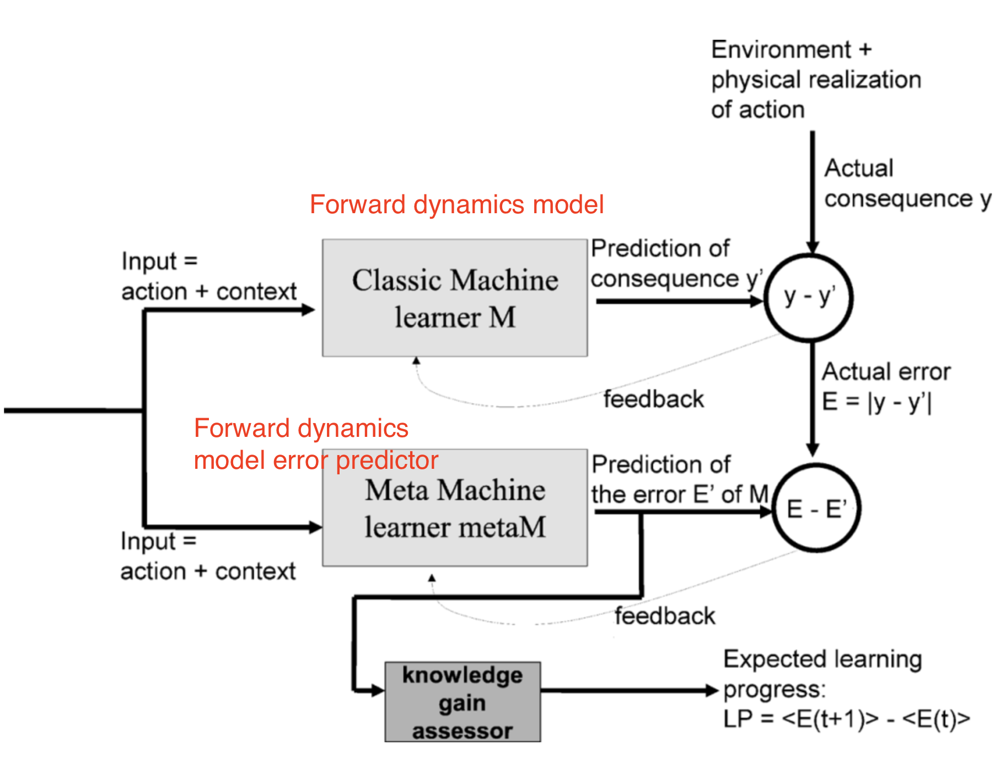
Stadie等人（2015）在由\phi、f_\phi: (\phi(s_t), a_t) \mapsto \phi(s_{t+1})定义的编码空间中训练前向动力学模型。模型在时间T的预测误差用截至时间t的最大误差进行归一化，得到\bar{e}_t = \frac{e_t}{\max_{i \leq t} e_i}，因此它始终在0到1之间。内在奖励据此定义为：r^i_t = (\frac{\bar{e}_t(s_t, a_t)}{t \cdot C})，其中C > 0是一个衰减常数。
通过\phi(.)对状态空间进行编码是必要的，因为论文中的实验表明，直接在原始像素上训练的动力学模型表现很差——会给所有状态分配相同的探索奖励。在Stadie等人（2015）中，编码函数\phi通过自编码器（AE）学习，\phi(.)是AE的一个输出层。自编码器可以使用随机代理收集的图像集进行静态训练，也可以与策略一起动态训练，其中早期帧使用\epsilon-greedy探索收集。
与自编码器不同，内在好奇心模块（ICM；Pathak等人，2017）通过自监督的反向动力学模型来学习状态空间编码\phi(.)。给定代理自身的动作来预测下一个状态并不容易，尤其是考虑到环境中有些因素是代理无法控制或不影响代理的。ICM认为，一个好的状态特征空间应该排除这些因素，因为它们无法影响代理的行为，代理也就没有动机去学习它们。通过学习反向动力学模型g: (\phi(s_t), \phi(s_{t+1})) \mapsto a_t，特征空间只捕捉环境中与代理动作相关的变化，而忽略其他部分。
给定前向模型f、反向动力学模型g和观测(s_t, a_t, s_{t+1})：
这样的\phi(.)被期望对环境中不可控的部分具有鲁棒性。
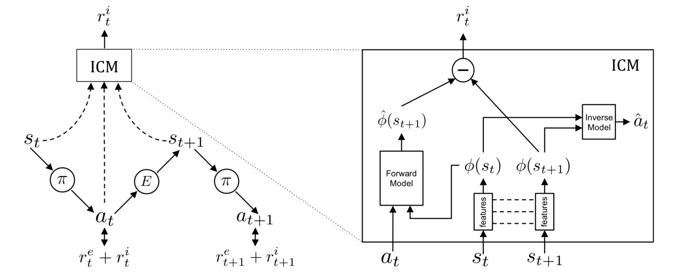
Burda, Edwards & Pathak等人（2018）对纯好奇心驱动的学习进行了大规模对比实验，即只向代理提供内在奖励。在这项研究中，奖励是r_t = r^i_t = | f(s_t, a_t) - \phi(s_{t+1})|_2^2。选择合适的\phi对学习前向动力学至关重要，它应紧凑、充分且稳定，从而使预测任务更易处理，并过滤掉无关观测。
在四种编码函数的对比中：
所有实验都使用累积回报标准差的运行估计对奖励信号进行归一化。所有实验都在无限时域设置下运行，以避免“done”标志泄露信息。
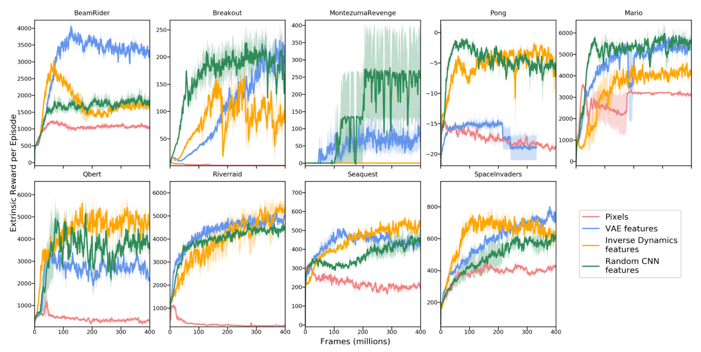
有趣的是，随机特征表现相当有竞争力，但在特征迁移实验（即在超级马里奥兄弟1-1关卡训练，然后在另一关卡测试）中，学习到的IDF特征能更好地泛化。
他们还在开启噪声电视的环境中比较了RF和IDF。毫不意外，噪声电视会显著减慢学习速度，外在奖励会随时间大幅降低。
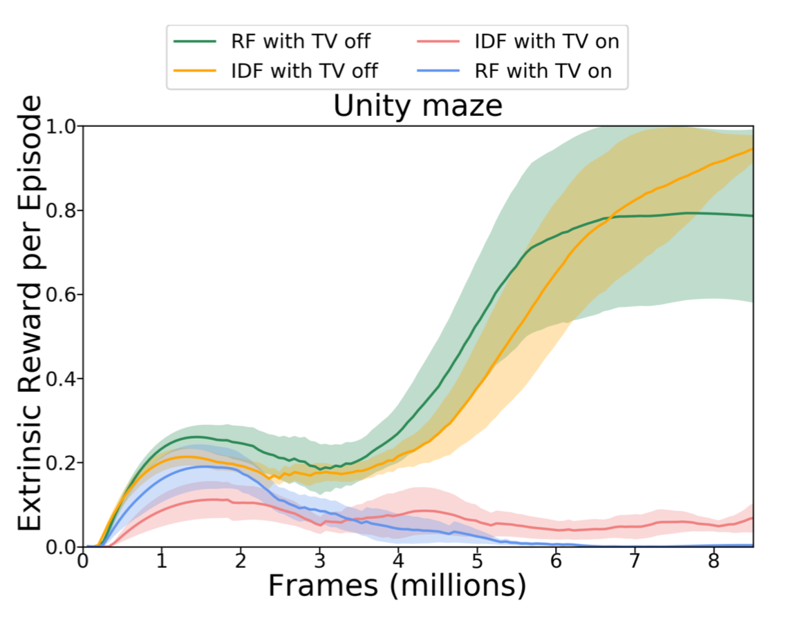
前向动力学优化也可以通过变分推断来建模。VIME（“变分信息最大化探索”的缩写；Houthooft等人，2017）是一种基于最大化关于代理对环境动力学信念的信息增益的探索策略。关于前向动力学获得多少额外信息，可以通过熵的减少来衡量。
令\mathcal{P}为环境转移函数，p(s_{t+1}\vert s_t, a_t; \theta)为由\theta \in \Theta参数化的前向预测模型，\xi_t = \{s_1, a_1, \dots, s_t\}为轨迹历史。我们希望在采取新动作并观测到下一个状态后减少熵，也就是要最大化以下目标：
在对新可能状态取期望的同时，代理应采取新动作来增加其对预测模型新信念与旧信念之间的KL散度（“信息增益”）。这一项可以作为内在奖励加入奖励函数：r^i_t = D_\text{KL} [p(\theta \vert \xi_t, a_t, s_{t+1}) | p(\theta \vert \xi_t))]。
然而，计算后验p(\theta \vert \xi_t, a_t, s_{t+1})通常是不可行的。
由于难以直接计算p(\theta\vert\xi_t)，一个自然的选择是用另一个分布q_\phi(\theta)来近似它。根据变分下界，我们知道最大化q_\phi(\theta)等价于最大化p(\xi_t\vert\theta)并最小化D_\text{KL}[q_\phi(\theta) | p(\theta)]。
使用近似分布q，内在奖励变为：
其中\phi_{t+1}表示看到a_t和s_{t+1}后与新信念相关的q的参数。当用作探索加成时，它通过除以该KL散度值的移动中位数来进行归一化。
这里的动力学模型被参数化为贝叶斯神经网络（BNN），因为它维护了权重上的分布。BNN权重分布q_\phi(\theta)被建模为完全因子分解的高斯分布，具有\phi = \{\mu, \sigma\}，我们可以轻松采样\theta \sim q_\phi(.)。在应用二阶泰勒展开后，KL项D_\text{KL}[q_{\phi + \lambda \Delta\phi}(\theta) | q_{\phi}(\theta)]可以使用\mathbf{F}_\phi来估计，这很容易计算，因为q_\phi是因子分解的高斯，因此协方差矩阵只是一个对角矩阵。更多细节见论文，尤其是2.3-2.5节。进化策略
以上所有方法都依赖于单个预测模型。如果我们有多个这样的模型，就可以使用模型之间的不一致性来设置探索奖励（Pathak等人，2019）。高不一致性表明预测置信度低，因此需要更多探索。Pathak等人（2019）提出训练一组前向动力学模型，并使用模型输出集合的方差作为r_t^i。具体来说，他们用随机特征对状态空间进行编码，并在集成中学习5个模型。
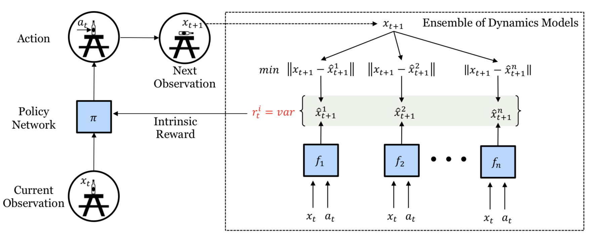
由于r^i_t是可微的，模型中的内在奖励可以直接通过梯度下降进行优化，从而告知策略代理改变动作。这种可微探索方法非常高效，但受限于探索视野较短。
随机网络#
但是，如果预测任务根本与环境动力学无关呢？事实证明，当预测任务是随机的，它仍然可以帮助探索。
DORA（“定向延伸强化动作选择”的缩写；Fox & Choshen等人，2018）是一个新颖的框架，它基于一个新引入的、与任务无关的MDP来注入探索信号。DORA的思想依赖于两个并行的MDP：
初始时E值被赋值为1。这种正向初始化可以鼓励定向探索以更好地预测E值。具有高E值估计的状态-动作对还没有收集到足够的信息，至少不足以排除它们的高E值。在某种程度上，E值的对数可以被视为访问计数器的一种泛化。
当使用神经网络对E值进行函数逼近时，会增加另一个价值头来预测E值，并简单地期望它预测零。给定预测的E值E(s_t, a_t)，探索奖励为r^i_t = \frac{1}{\sqrt{-\log E(s_t, a_t)}}。
与DORA类似，随机网络蒸馏（RND；Burda等人，2018）引入了一个独立于主要任务的预测任务。RND探索奖励被定义为一个神经网络\hat{f}(s_t)预测由固定随机初始化神经网络f(s_t)生成的观测特征时的误差。其动机是：给定一个新状态，如果过去已经多次访问过相似状态，预测应该更容易，误差也就更低。探索奖励为r^i(s_t) = |\hat{f}(s_t; \theta) - f(s_t) |_2^2。
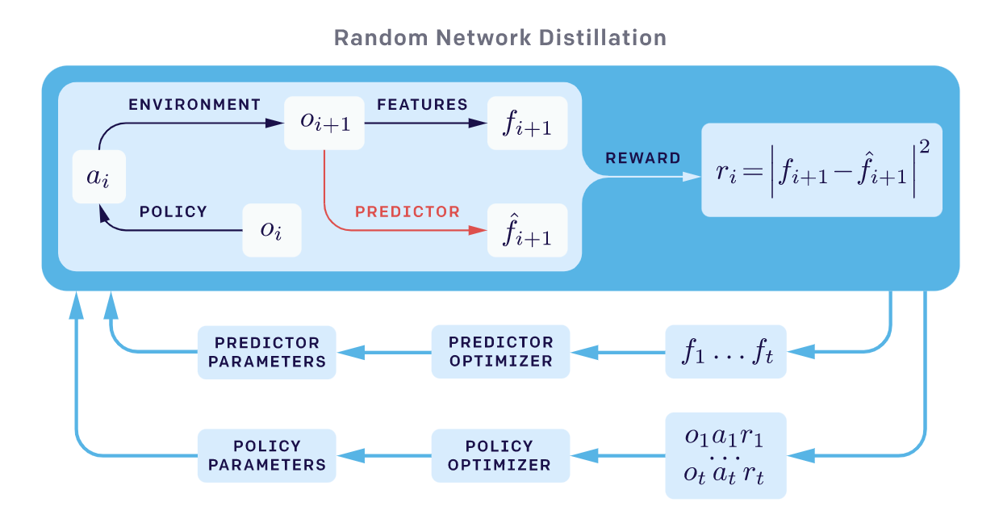
RND实验中有两个重要因素：
RND设置在解决困难探索问题上表现良好。例如，最大化RND探索奖励能够持续发现蒙特祖玛的复仇中超过一半的房间。
物理属性#
与模拟器中的游戏不同，一些强化学习应用（如机器人技术）需要理解物理世界中的物体和直观推理。一些预测任务要求代理与环境进行一系列交互并观察相应结果，例如估计物理中的某些隐藏属性（例如质量、摩擦力等）。
受这些想法启发，Denil等人（2017）发现深度强化学习代理能够学会进行必要的探索来发现这些隐藏属性。具体来说，他们考虑了两个实验：
实验中的代理首先经历一个探索阶段，与环境互动并收集信息。一旦探索阶段结束，代理被要求输出一个标记动作来回答问题。如果答案正确，则给予正奖励；否则给予负奖励。由于回答问题需要与场景中的物体进行大量交互，代理必须学会高效地摆弄它们，以弄清楚物理规律并给出正确答案。探索就这样自然发生了。
在他们的实验中，代理能够在两个任务中学习，性能随任务难度而变化。虽然论文没有将物理预测任务用于在另一个学习任务的外在奖励之外提供内在奖励加成，而是专注于探索任务本身，但我很欣赏通过预测环境中隐藏物理属性来鼓励复杂探索行为的想法。
基于记忆的探索#
基于奖励的探索存在几个缺点：
本节的方法依赖外部记忆来解决基于奖励加成探索的缺点。
情景记忆#
如上所述，RND在非情景设置下运行得更好，这意味着预测知识会在多个episode之间累积。探索策略“永不放弃”（NGU；Badia等人，2020a）结合了一个能在单个episode内快速适应的情景新奇模块和作为终身新奇模块的RND。
具体来说，NGU中的内在奖励由两个模块提供的两个探索奖励组成，分别来自单个episode内和跨多个episode。
短期的每个episode奖励由情景新奇模块提供。它包含一个情景记忆M（一个动态大小的基于槽位的记忆）和一个IDF（反向动力学特征）嵌入函数\phi，与ICM中的特征编码相同。
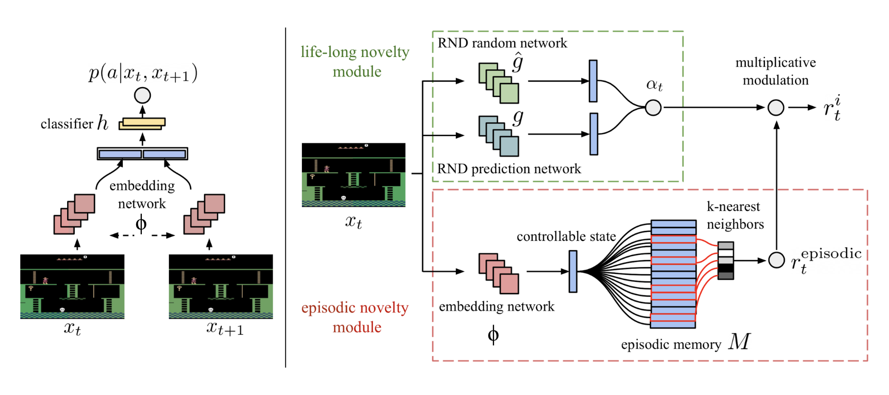
长期跨episode的新奇性依赖于终身新奇模块中RND的预测误差。探索奖励为\alpha_t = 1 + \frac{e^\text{RND}(s_t) - \mu_e}{\sigma_e}，其中\mu_e和\sigma_e分别是RND误差e^\text{RND}(s_t)的运行均值和标准差。
然而，在RND论文的结论部分，我注意到以下表述： “我们发现RND探索奖励足以处理局部探索，即探索短期决策的结果，比如是否与某个特定物体交互或避开它。然而，涉及长时间跨度协调决策的全局探索超出了我们方法的能力范围。” 这让我有些困惑RND如何能作为一个好的终身新奇奖励提供者。如果你知道原因，欢迎在下方留言。
最终组合的内在奖励是r^i_t = r^\text{episodic}_t \cdot \text{clip}(\alpha_t, 1, L)，其中L是一个常量最大奖励标量。
NGU的设计使其具有两个优良特性：
后来，基于NGU，DeepMind提出了“Agent57”（Badia等人，2020b），这是第一个在全部57个Atari游戏上超越标准人类基准的深度强化学习代理。Agent57相对于NGU的两个主要改进是：
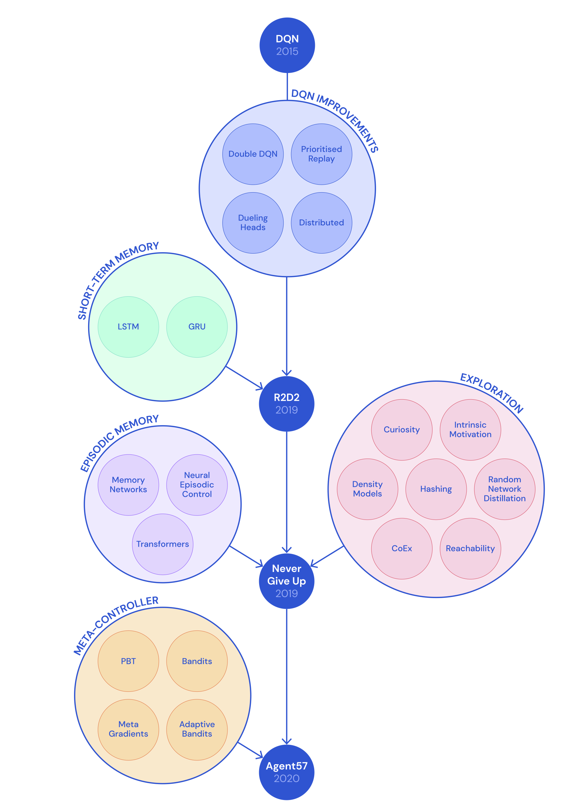
Savinov等人（2019）没有使用欧氏距离来衡量情景记忆中状态的接近程度，而是将状态之间的转移纳入考虑，提出了一种衡量从记忆中其他状态到达某个状态所需步数的方法，称为情景好奇心（EC）模块。新奇奖励取决于状态之间的可达性。
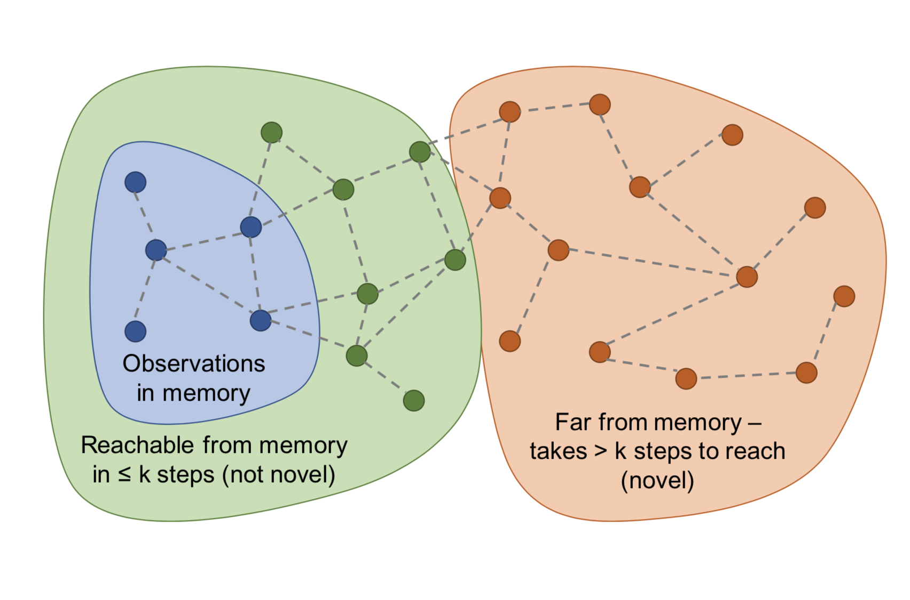
为了估计状态之间的可达性，我们需要访问转移图，但不幸的是它并不完全已知。因此，Savinov等人（2019）训练了一个神经网络来预测两个状态之间相隔多少步。它包含一个嵌入网络\phi: \mathcal{S} \mapsto \mathbb{R}^n先将状态编码为特征向量，然后是一个比较网络C: \mathbb{R}^n \times \mathbb{R}^n \mapsto [0, 1]，输出一个二元标签，判断两个状态在转移图中是否足够接近（即在k步内可达），记为C(\phi(s_i), \phi(s_j)) \mapsto [0, 1]。元学习：学会快速学习
一个情景记忆缓冲区M存储同一episode内一些过去观测的嵌入。新观测将通过C与现有的状态嵌入进行比较，结果被聚合（例如取最大值、第90百分位）以提供可达性分数C^M(\phi(s_t))。探索奖励为r^i_t = \big(C’ - C^M(f(s_t))\big)，其中C’是一个预定义的阈值，用于确定奖励的符号（例如C’=0.5对固定时长的episode效果良好）。当新状态不容易从记忆缓冲区中的状态到达时，会获得高奖励。
他们声称EC模块可以克服噪声电视问题。
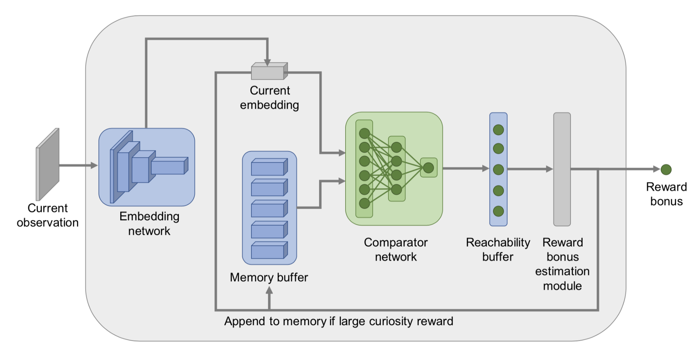
直接探索#
Go-Explore（Ecoffet等人，2019）是一种旨在解决“困难探索”问题的算法。它由以下两个阶段组成。
第一阶段（“探索直到解决”）感觉很像Dijkstra算法在图中寻找最短路径。事实上，第一阶段不涉及任何神经网络。通过维护有趣状态及其到达轨迹的记忆，代理可以返回（假设模拟器是确定的）到有希望的状态，并从那里继续进行随机探索。状态被映射为一个简短的离散化编码（称为“单元”）以便记忆。如果出现新状态或找到更好/更短的轨迹，则更新记忆。在选择要返回的过去状态时，代理可能会均匀地从记忆中选择，或者根据最近性、访问计数、记忆中邻居数量等启发式方法选择。这个过程重复直到任务被解决并至少找到一条解决方案轨迹。
上述找到的高性能轨迹在任何具有随机性的评估环境中都不会表现良好。因此，需要第二阶段（“鲁棒化”）通过模仿学习来使解决方案变得鲁棒。他们采用了Backward Algorithm，其中代理从轨迹中最后一个状态附近开始，然后从那里运行强化学习优化。
第一阶段的一个重要注意事项是：为了在没有探索的情况下确定性地返回到某个状态，Go-Explore依赖于一个可重置且确定的模拟器，这是一个很大的缺点。
为了使该算法对具有随机性的环境更具普适性，后来提出了Go-Explore的增强版本（Ecoffet等人，2020），称为基于策略的Go-Explore。
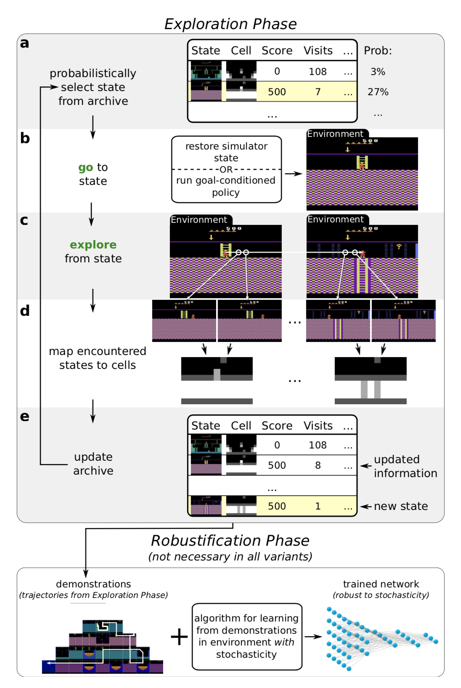
在原始Go-Explore之后，Yijie Guo等人（2019）提出了DTSIL（多样轨迹条件自模仿学习），其思路与上述基于策略的Go-Explore类似。DTSIL维护一个在训练期间收集的多样示范记忆，并使用它们通过SIL训练一个轨迹条件策略。他们在采样时优先选择以稀有状态结束的轨迹。
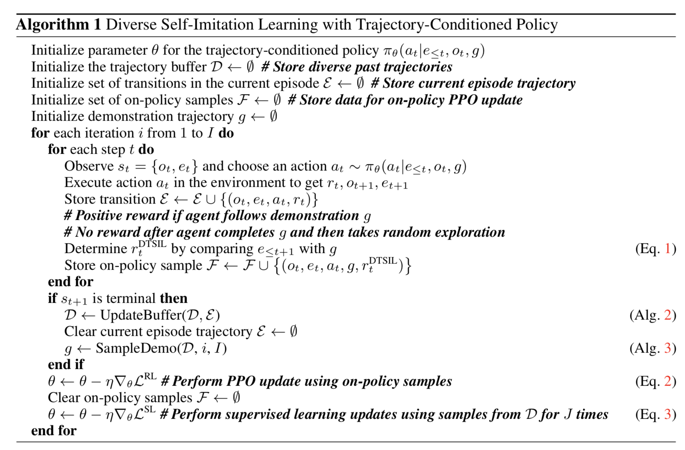
类似的方法也出现在Guo等人（2019）中。主要思想是将具有高不确定性的目标存储在记忆中，以便后续代理可以通过目标条件策略反复重访这些目标状态。在每个episode中，代理抛硬币（概率0.5）来决定是根据策略贪婪行动，还是从记忆中采样目标进行定向探索。
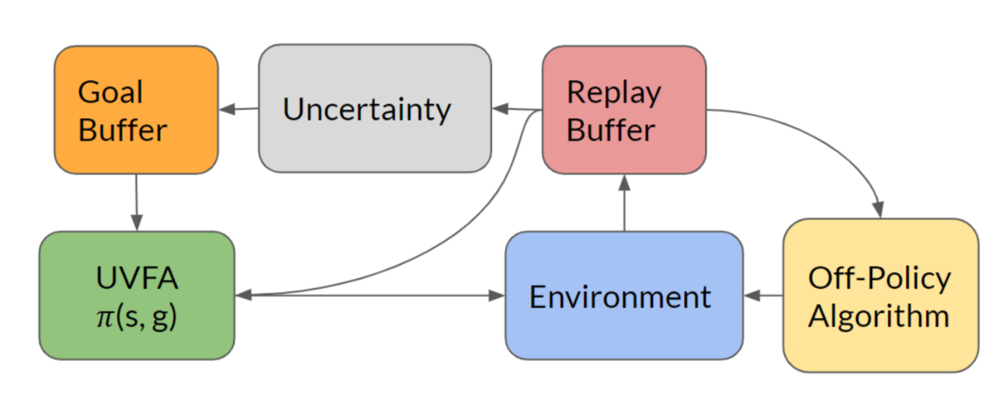
状态的不确定性度量可以是简单的基于计数的奖励，也可以是复杂的如密度或贝叶斯模型。论文训练了一个前向动力学模型，并将其预测误差作为不确定性度量。
Q值探索#
受的启发，Bootstrapped DQN（Osband等人，2016）通过使用自助法在经典强化学习漫谈的Q值逼近中引入了不确定性概念。自助法是通过从同一总体中有放回地多次采样并聚合结果来近似分布。多臂老虎机问题及其解决方案
多个Q值头并行训练，但每个只使用自助子采样数据集，并且每个都有自己对应的目标网络。所有Q值头共享相同的主干网络。
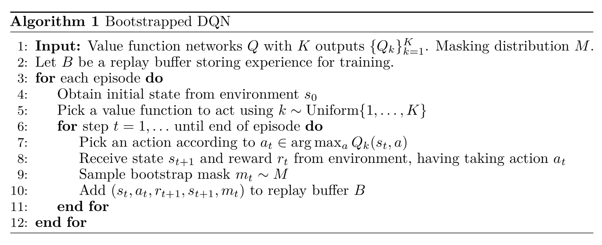
在一个episode开始时，均匀采样一个Q值头，并在该episode中负责收集经验数据。然后从掩码分布m \sim \mathcal{M}中采样一个二进制掩码，决定哪些头可以使用这些数据进行训练。掩码分布\mathcal{M}的选择决定了自助样本的生成方式；例如：
然而，这种探索仍然是受限的，因为由自助法引入的不确定性完全依赖于训练数据。最好注入一些独立于数据的先验信息。这种“噪声”先验有望在奖励稀疏时驱动代理持续探索。将随机先验加入Bootstrapped DQN以实现更好探索的算法（Osband等人，2018）依赖于贝叶斯线性回归。贝叶斯回归的核心思想是：“我们可以通过在数据的噪声版本上训练，并加上一些随机正则化，来生成后验样本”。
令\theta为Q函数参数，\theta^-为目标Q，使用随机化先验函数p的损失函数为：
变分选项#
选项是带有终止条件的策略。在搜索空间中存在大量选项，它们独立于代理的意图。通过显式地将内在选项纳入建模，代理可以获得用于探索的内在奖励。
VIC（“变分内在控制”的缩写；Gregor等人，2017）就是一个这样的框架，它通过对选项建模并学习以选项为条件的策略来为代理提供内在探索奖励。令\Omega表示一个从s_0开始并在s_f结束的选项。环境概率分布p^J(s_f \vert s_0, \Omega)定义了给定起始状态s_0时选项\Omega在何处终止。可控性分布p^C(\Omega \vert s_0)定义了我们可以从中采样的选项的概率分布。根据定义有p(s_f, \Omega \vert s_0) = p^J(s_f \vert s_0, \Omega) p^C(\Omega \vert s_0)。
在选择选项时，我们希望实现两个目标：
将两者结合，我们得到要最大化的互信息I(\Omega; s_f \vert s_0)：
由于互信息是对称的，我们可以在几个地方交换s_f和\Omega而不破坏等价性。同时因为p(\Omega \vert s_0, s_f)难以观测，让我们用近似分布q替换它。根据变分下界，我们有I(\Omega; s_f \vert s_0) \geq I^{VB}(\Omega; s_f \vert s_0)。
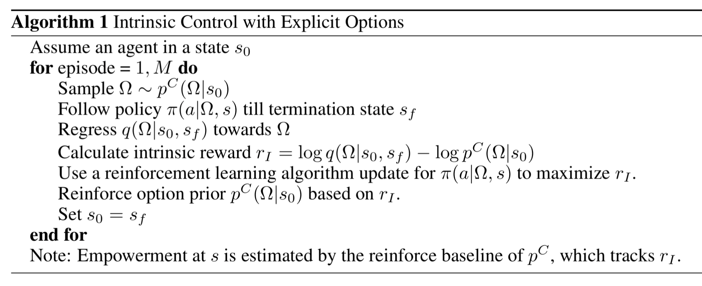
这里\pi(a \vert \Omega, s)可以用任何强化学习算法进行优化。选项推断函数q(\Omega \vert s_0, s_f)进行监督学习。先验p^C被更新，以便倾向于选择具有更高奖励的\Omega。注意p^C也可以是固定的（例如高斯分布）。不同的\Omega通过学习会产生不同的行为。此外，Gregor等人（2017）观察到，使用显式选项的VIC在实践中用函数逼近难以奏效，因此他们还提出了另一种使用隐式选项的VIC版本。
与仅基于起始和结束状态对\Omega建模的VIC不同，VALOR（“通过强化学习的变分自编码选项学习”的缩写；Achiam等人，2018）依赖于整个轨迹来提取选项上下文c，该上下文从固定的高斯分布中采样。在VALOR中：
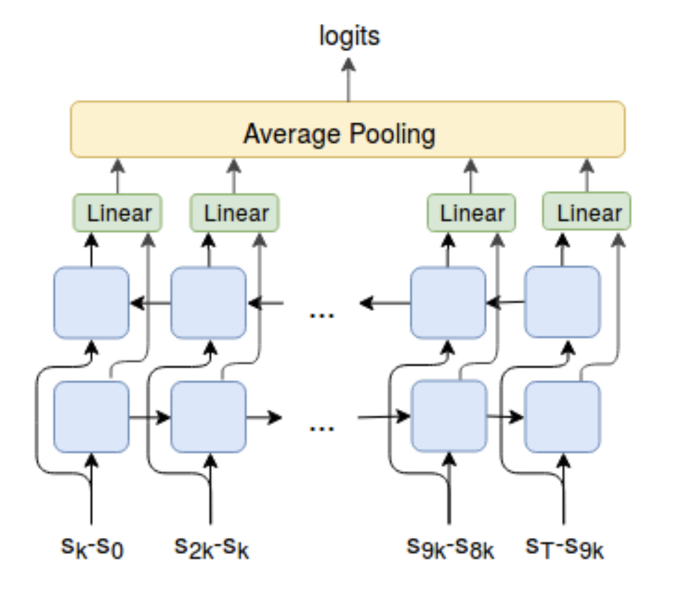
DIAYN（“多样性就是一切所需”；Eysenbach等人，2018）的思想方向相同，尽管名字不同——DIAYN对以潜在技能变量为条件的策略进行建模。更多细节见我的。元强化学习
引用#
引用格式：
Weng, Lilian. (Jun 2020). Exploration strategies in deep reinforcement learning. Lil’Log. https://lilianweng.github.io/posts/2020-06-07-exploration-drl/.
@article{weng2020exploration,
title = "Exploration Strategies in Deep Reinforcement Learning",
author = "Weng, Lilian",
journal = "lilianweng.github.io",
year = "2020",
month = "Jun",
url = "https://lilianweng.github.io/posts/2020-06-07-exploration-drl/"
}
参考文献#
[1] Pierre-Yves Oudeyer & Frederic Kaplan. “How can we define intrinsic motivation?” Conf. on Epigenetic Robotics, 2008.
[2] Marc G. Bellemare, et al. “Unifying Count-Based Exploration and Intrinsic Motivation”. NIPS 2016.
[3] Georg Ostrovski, et al. “Count-Based Exploration with Neural Density Models”. PMLR 2017.
[4] Rui Zhao & Volker Tresp. “Curiosity-Driven Experience Prioritization via Density Estimation”. NIPS 2018.
[5] Haoran Tang, et al. "#Exploration: A Study of Count-Based Exploration for Deep Reinforcement Learning”. NIPS 2017.
[6] Jürgen Schmidhuber. “A possibility for implementing curiosity and boredom in model-building neural controllers” 1991.
[7] Pierre-Yves Oudeyer, et al. “Intrinsic Motivation Systems for Autonomous Mental Development” IEEE Transactions on Evolutionary Computation, 2007.
[8] Bradly C. Stadie, et al. “Incentivizing Exploration In Reinforcement Learning With Deep Predictive Models”. ICLR 2016.
[9] Deepak Pathak, et al. “Curiosity-driven Exploration by Self-supervised Prediction”. CVPR 2017.
[10] Yuri Burda, Harri Edwards & Deepak Pathak, et al. “Large-Scale Study of Curiosity-Driven Learning”. arXiv 1808.04355 (2018).
[11] Joshua Achiam & Shankar Sastry. “Surprise-Based Intrinsic Motivation for Deep Reinforcement Learning” NIPS 2016 Deep RL Workshop.
[12] Rein Houthooft, et al. “VIME: Variational information maximizing exploration”. NIPS 2016.
[13] Leshem Choshen, Lior Fox & Yonatan Loewenstein. “DORA the explorer: Directed outreaching reinforcement action-selection”. ICLR 2018
[14] Yuri Burda, et al. “Exploration by Random Network Distillation” ICLR 2019.
[15] OpenAI Blog: “Reinforcement Learning with Prediction-Based Rewards” Oct, 2018.
[16] Misha Denil, et al. “Learning to Perform Physics Experiments via Deep Reinforcement Learning”. ICLR 2017.
[17] Ian Osband, et al. “Deep Exploration via Bootstrapped DQN”. NIPS 2016.
[18] Ian Osband, John Aslanides & Albin Cassirer. “Randomized Prior Functions for Deep Reinforcement Learning”. NIPS 2018.
[19] Karol Gregor, Danilo Jimenez Rezende & Daan Wierstra. “Variational Intrinsic Control”. ICLR 2017.
[20] Joshua Achiam, et al. “Variational Option Discovery Algorithms”. arXiv 1807.10299 (2018).
[21] Benjamin Eysenbach, et al. “Diversity is all you need: Learning skills without a reward function.”. ICLR 2019.
[22] Adrià Puigdomènech Badia, et al. “Never Give Up (NGU): Learning Directed Exploration Strategies” ICLR 2020.
[23] Adrià Puigdomènech Badia, et al. “Agent57: Outperforming the Atari Human Benchmark”. arXiv 2003.13350 (2020).
[24] DeepMind Blog: “Agent57: Outperforming the human Atari benchmark” Mar 2020.
[25] Nikolay Savinov, et al. “Episodic Curiosity through Reachability” ICLR 2019.
[26] Adrien Ecoffet, et al. “Go-Explore: a New Approach for Hard-Exploration Problems”. arXiv 1901.10995 (2019).
[27] Adrien Ecoffet, et al. “First return then explore”. arXiv 2004.12919 (2020).
[28] Junhyuk Oh, et al. “Self-Imitation Learning”. ICML 2018.
[29] Yijie Guo, et al. “Self-Imitation Learning via Trajectory-Conditioned Policy for Hard-Exploration Tasks”. arXiv 1907.10247 (2019).
[30] Zhaohan Daniel Guo & Emma Brunskill. “Directed Exploration for Reinforcement Learning”. arXiv 1906.07805 (2019).
[31] Deepak Pathak, et al. “Self-Supervised Exploration via Disagreement.” ICML 2019.